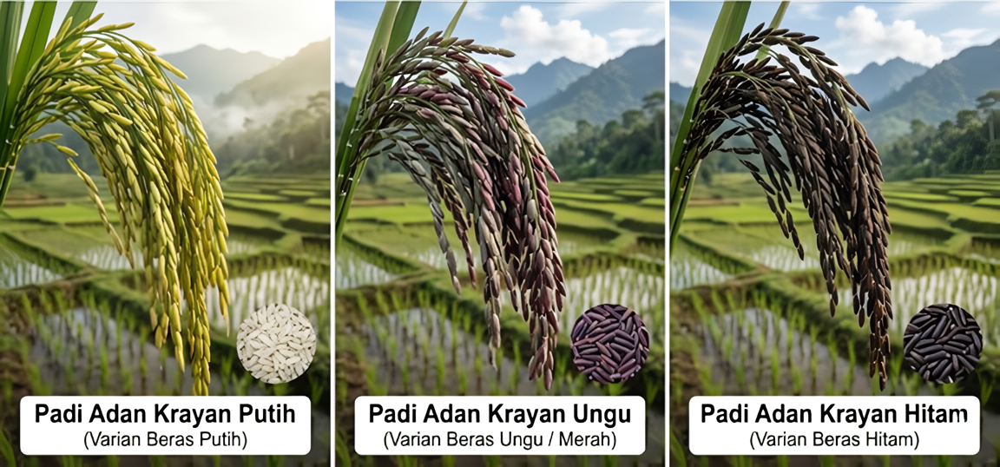

Padi Organik dari Perbatasan Negara

Kalimantan Utara
Lembut & Pulen
Organik Alami
Indikasi Geografis
Adan Krayan adalah padi lokal organik luar biasa yang ditanam di dataran tinggi Krayan, perbatasan antara Indonesia dan Malaysia di Kabupaten Nunukan, Kalimantan Utara. Padi ini telah mendapatkan sertifikat Indikasi Geografis (IG), yang berarti kualitas rasanya dipengaruhi langsung oleh alam geografis tempatnya ditanam.
Proses penanaman padi ini menggunakan sistem pertanian tradisional yang sangat ramah lingkungan. Petani mengalirkan air langsung dari mata air pegunungan tanpa menggunakan pupuk kimia maupun pestisida sintetik. Butiran beras Adan Krayan berukuran kecil dan sangat halus, tersedia dalam warna putih, merah, dan hitam. Saking lezatnya, beras ini memiliki kualitas ekspor tinggi dan sering menjadi hidangan favorit bagi keluarga kerajaan di negara tetangga seperti Brunei Darussalam dan Malaysia.
⬅ Kembali ke Daftar Padi